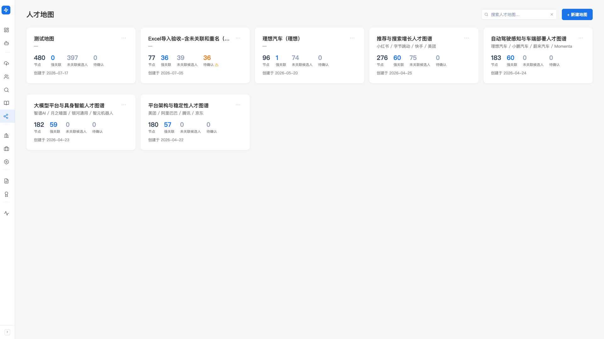
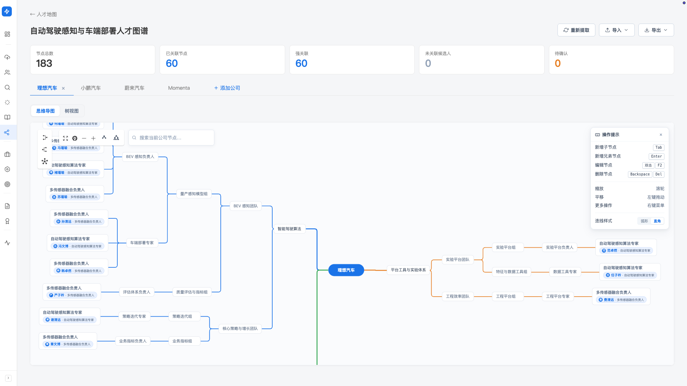

Mapping
客户突然要找「某领域的资深候选人」，最高效的路径是从对标公司的对标岗位定向联系—— 但前提是你有维护好的人才地图。Mapping 用思维导图建对标公司的组织结构， 每个节点自动关联到候选人库，你的库覆盖了对标公司多少人，一目了然。
产品里对应左侧导航「寻访（找人）」分组下的「人才地图」。
先理清几个概念
- 地图：一个独立的人才地图，对应一个调研主题（如「AI 大模型领域人才地图」「车企智驾团队地图」）。可以建多张
- 公司（树的根节点）：地图里的每个对标公司是一棵树，如「字节大模型团队」「阿里达摩院 NLP」
- 节点：公司树下的任意一层，内容自由填写（常见写法如「部门 / 组 / 岗位 / 具体人名」）
- 关联：节点上的人名如果命中候选人库里的某个人，会自动关联过去——这是 Mapping 价值的核心
人才地图列表页
打开后从上到下：
- 搜索框：按地图名搜
- 「+ 新建地图」按钮（蓝色主按钮）
- 进行中的导入：如果你刚上传了脑图文件，会在顶部显示导入进度卡
- 地图卡片网格：每张地图一张卡，显示名称、目标公司、4 个 关键指标、创建日期。卡片可拖拽排序
每张地图卡上的 4 个 关键指标：
- 节点：地图里所有节点的总数
- 强关联：已经成功关联到候选人库的关联数（命中候选人的次数）
- 未关联候选人：节点写了人名但库里没找到，提示你可以补简历
- 待确认：系统找到候选人但不确定是否是同一人，等你确认（数字 > 0 时会有橙色警告图标）

新建一张地图
-
点右上角「+ 新建地图」
弹出新建弹窗。
-
填地图名称（必填）
名字要能让你未来一眼看出地图主题。如「AI 大模型领域人才地图」「2026 Q1 车企智驾团队」。
-
列出目标公司（可选，每行一个）
如「微软 / 阿里巴巴 / 百度 / 字节跳动」每行一个，作为地图的初始公司树。 后续在地图内还能继续添加。
-
列出目标职能（可选，逗号分隔）
如「大模型研究员、AI 算法负责人、NLP 工程师」——这是你关心的岗位，后续提取节点时会用到。
-
点「创建地图」
地图建好后，回到列表页能看到这张新卡，点进去开始建结构。
进入一张地图：详情页
详情页是建图、看图、编辑的主战场。从上到下：
- 顶部：标题 + 「重新提取」按钮 + 「导入」dropdown + 「导出」dropdown
- 关键指标 行：节点总数 / 已关联节点 / 强关联 / 未关联候选人 / 待确认
- 公司标签页：地图里的每个对标公司是一个标签页，「＋ 添加公司」按钮
- 视图切换：「思维导图」/「树视图」
- 节点搜索：在当前公司树里搜节点
- 左侧：视图区（思维导图或树视图）
- 右侧：节点详情面板（点击某个节点显示）
建结构：两种视图，怎么选
树视图：适合快速录入
左侧是层级缩进的树，每行 hover 时会出现「+ 子节点」按钮。 适合从零开始批量录入——你脑子里清楚组织结构，按一行接一行写下去。
思维导图：适合可视化梳理
左侧是可视化思维导图（中央根节点向外辐射），可缩放、拖动、右键菜单。 适合看图比看树更直观的场景——自己梳理整体结构、看清楚库内覆盖了哪些区块。

思维导图快捷键
开启思维导图视图后，右上角「操作提示」面板列出全部快捷键：
- Tab：新增子节点
- Enter：新增兄弟节点（同级）
- 双击 / F2：编辑节点
- Backspace / Del：删除节点
- 滚轮：缩放
- 左键拖动：平移画布
- 右键：更多操作菜单
连线样式可选弧形或直角（默认直角，组织树更清晰）。
在树视图里加的节点，切到思维导图也能看到，反之亦然——这是同一份数据的两种呈现。 按场景选用哪个视图，不存在「重新做」一遍的问题。
节点自动关联候选人
这是 Mapping 和普通脑图工具的核心差异。
每次你新建或编辑一个节点（含人名），Hunter 会自动尝试关联到候选人库：
-
命中库内候选人 → 强关联
节点上会显示候选人的小头像 / 标识，点节点可在右侧详情面板看到候选人完整档案。
-
找到候选人但不确定 → 待确认
常见情况：节点写「张伟」，库里有 3 个张伟。 Hunter 不会乱猜，会进「待确认」队列让你自己看清楚是哪个。 列表页和详情页 关键指标 都会有橙色警告提示。
-
库里没找到 → 未关联
节点有人名但库里没这个人。这是个机会信号—— 「我知道这个人在某公司某岗位，可惜库里没简历」， 意味着你可以专门去找这个人的简历，找到后入库会自动关联到 mapping。
重新提取：批量补关联
如果你新导入了一批简历到候选人库（候选人库变大了）， 想让 mapping 里原本"未关联"的节点重新尝试关联—— 点详情页顶部的「重新提取」按钮，会重新识别所有未识别的人名并尝试关联。
导入 / 导出：5 种脑图格式互通
你过去可能用 XMind / EdrawMind / WPS / 幕布 等工具画过对标公司组织图—— Mapping 支持5 种格式互导，老资产可以直接搬进来，建好的图也可以导出做备份或离线查看。
导入到当前地图
详情页顶部「导入」dropdown，选格式：
- .emmx：EdrawMind / WPS 思维导图原生格式
- .xmind：XMind 软件原生格式
- .opml：通用大纲格式（幕布 / OmniOutliner 等）
- .md / .markdown：Markdown 大纲格式
- .json：Hunter 自己导出的备份（无损含关联信息）
所有 5 种格式的导入，都是追加为当前地图的新一级树—— 不会清空你已有的内容，也不会重命名你已有的公司。 想从零开始的话，先新建一张空地图再导入。
导出当前地图
顶部「导出」dropdown，5 种格式与导入对应：
- .emmx：用 EdrawMind / WPS 打开
- .xmind：用 XMind 打开
- .opml：通用大纲格式
- .md：纯文本，能在任意编辑器打开
- .json：Hunter 备份格式，含候选人关联信息，迁移机器时用
最佳实践
建议每周抽固定一段时间更新人才地图—— 把这周新看到的人选放进合适的节点、新听到的组织调整反映在结构里。 日常工作中你接触的信息很碎，集中梳理一次比临时抓取效率高 10 倍。
列表页 关键指标 里的「未关联候选人」数字其实是你的下一步寻人清单—— 点进去看到节点上的人名你都知道在哪个公司哪个岗位，专门去找这些人的联系方式， 找到一个就把库扩充一格，mapping 的强关联数也涨一格。
常见提示
常见原因：节点里的人名跟库里候选人姓名不完全一致（如库里是「Wang Xiaoming」，节点写「王晓明」）—— 自动关联要求姓名完全一致才会命中。 不一致时手动点该节点，在右侧详情面板里搜索并关联即可；也可点顶部「重新提取」再识别一次。
XMind 有一些高级元素（关系线、自由主题、boundary）在 Mapping 里没有对应概念，会被简化为普通子节点。 核心组织结构都能保留，但视觉装饰可能丢失，这是预期行为。
删除一张地图会清掉所有组织架构数据，不可恢复。 如果只是想暂时不看到，建议导出 .json 备份后再删—— 未来可以从 json 恢复（导入到新建地图）。